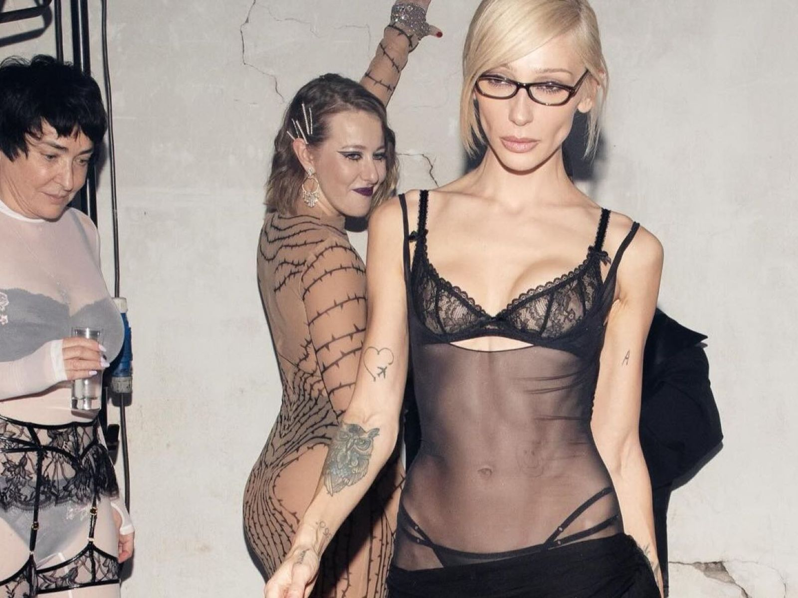
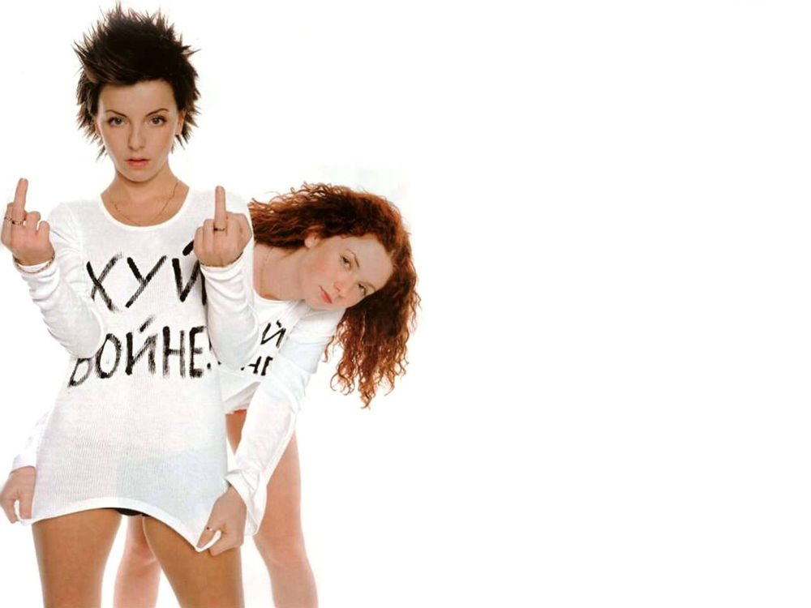
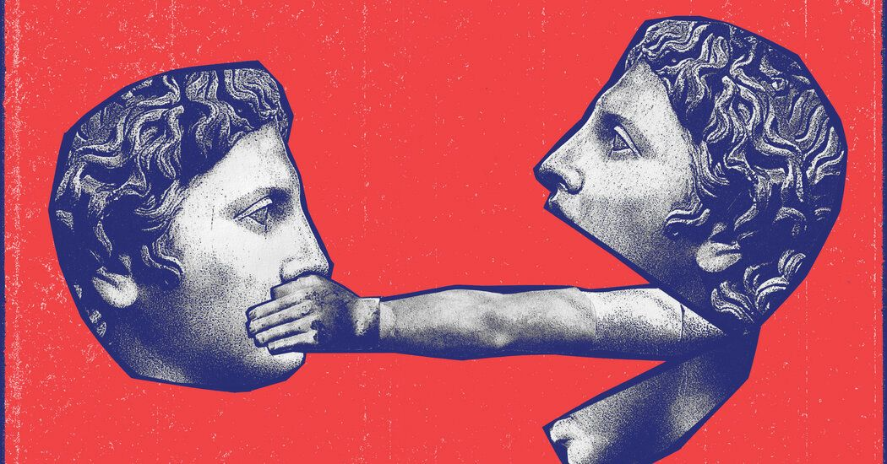
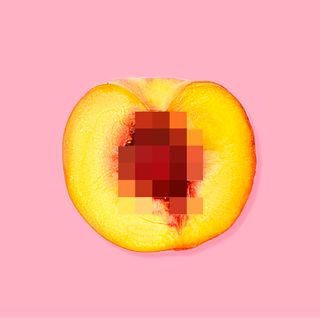
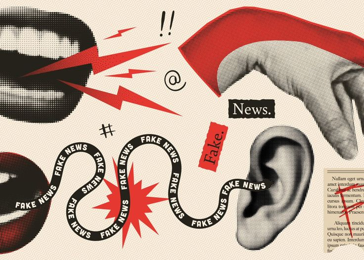
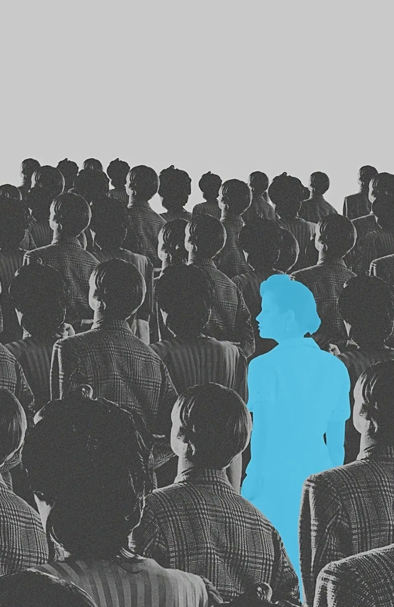
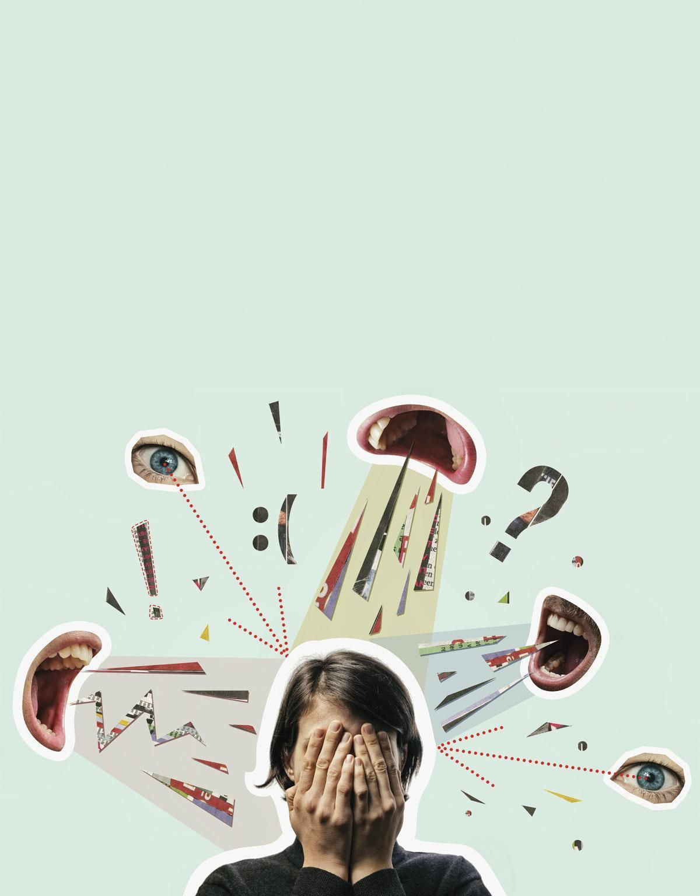
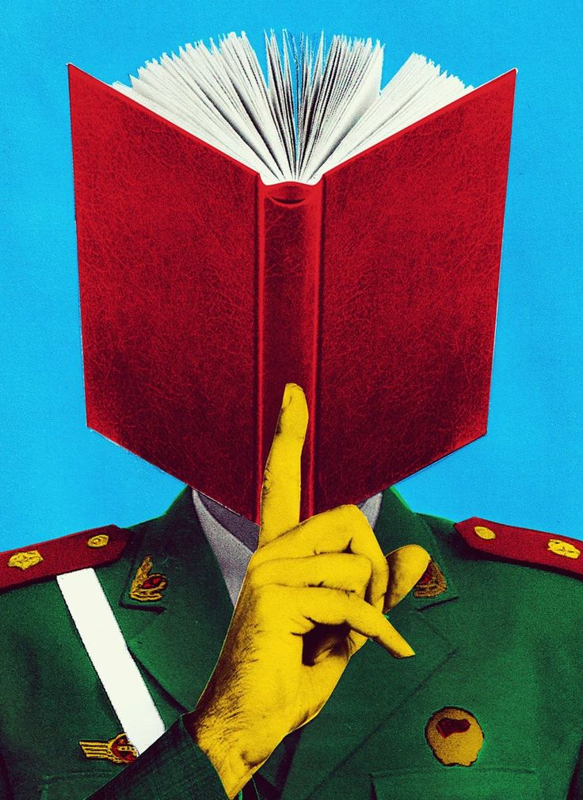
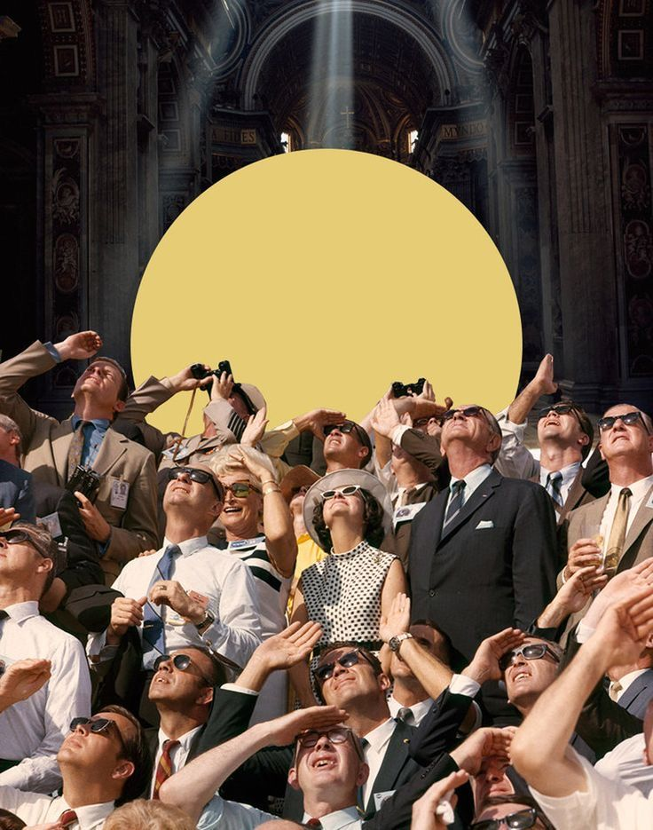
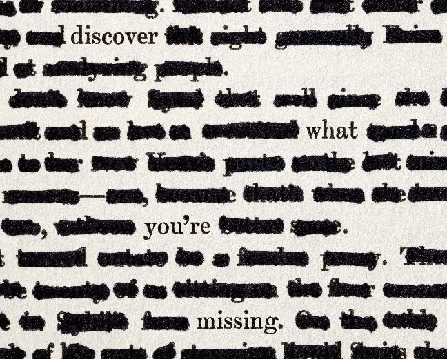

Creativity is often imagined as an expression of freedom — an
unrestricted flow of ideas, forms, and meanings. Yet historically and
contemporarily, some of the most distinctive creative practices have
emerged precisely under conditions of restriction. Political regimes,
moral norms, institutional controls, and algorithmic systems have
repeatedly attempted to regulate artistic and expressive production.
Paradoxically, these constraints have not only suppressed creativity
but have also reshaped it, giving rise to indirect, symbolic, and
highly inventive forms of expression.
ConCreCen (Constraint-Driven Creativity under
Censorship) explores this tension. The project investigates how
censorship functions simultaneously as a barrier and as a productive
friction within creative processes. Rather than treating censorship
solely as a negative external force, we model it as a complex system
of constraints that interact with creators, media, technologies, and
cultural contexts — sometimes silencing expression, sometimes
stimulating innovation through indirection.










Why Censorship and Creativity?
Across different historical periods and media environments, creators
have repeatedly adapted their strategies in response to censorship:
In authoritarian regimes, writers and artists have
relied on allegory, metaphor, and coded language to convey
prohibited meanings.
In popular culture, censorship has been
aestheticized and strategically incorporated into artistic
identities.
In contemporary digital platforms, AI-driven
content moderation systems silently reshape creative behavior
through algorithmic filtering, uncertainty, and self-censorship.
These cases suggest that censorship does not simply remove creative
possibilities; it reconfigures the creative space itself, altering how
ideas are formed, expressed, and interpreted.
Project Aim
The goal of ConCreCen is to develop an ontology-based framework that
formally models:
different types of censorship and constraints;
creative processes and strategies developed in response to them;
the social, historical, and technological contexts in which these
dynamics occur;
the consequences of censorship for creative production, ranging from
suppression to innovation under constraint.
By representing these elements in a structured knowledge model, the
project enables systematic analysis of how creativity operates under
restriction — both in historical cases and in contemporary,
AI-mediated environments.
From History to AI-Driven Censorship
ConCreCen deliberately spans multiple temporal and technological
contexts. It connects well-documented historical cases of censorship
in literature, art, and music with present-day forms of platform-based
and AI-driven moderation. In doing so, the project highlights a
critical shift: censorship is increasingly delegated to automated
systems, whose opaque decision-making processes introduce new forms of
constraint, uncertainty, and creative adaptation.
This transition raises new questions:
How does algorithmic censorship differ from institutional or state
censorship?
What kinds of creative strategies emerge when creators must
anticipate machine judgment?
Can restriction imposed by AI systems unintentionally foster new
forms of symbolic, visual, or memetic creativity?
Methodological Perspective
ConCreCen follows a knowledge-engineering approach grounded in:
theoretical work on creativity, constraints, and censorship;
ontology design patterns and alignment with existing semantic
resources;
the construction of a knowledge graph combining historical and
synthetic cases;
exploratory experiments involving large language models (LLMs) for
generation and evaluation under constrained conditions.
Rather than offering a normative answer to whether censorship is
“good” or “bad” for creativity, the project provides a formal
analytical tool for examining how creativity adapts, transforms, or
collapses under different forms of restriction.
A Core Insight
At the heart of ConCreCen lies a simple but powerful observation:
Censorship does not only restrict creativity — in certain
conditions, it reorganizes and intensifies it.
This ontology makes that insight explicit, traceable, and
computationally explorable.
Overview
The ConCreCen project (Constraint-Driven Creativity
under Censorship) investigates the complex and often paradoxical
relationship between censorship, constraints, and creative production,
with particular attention to contemporary forms of AI-driven
censorship systems. While censorship is conventionally framed as a
purely suppressive mechanism that limits freedom of expression and
diminishes creative output, historical, sociological, and cognitive
studies increasingly suggest a more nuanced dynamic: constraints may
also function as productive frictions, stimulating indirect
expression, divergence, and innovative creative strategies.
This project adopts the position that creativity should not be
understood solely as a process unfolding under conditions of freedom,
but rather as a situated, adaptive phenomenon, shaped by
institutional, social, technological, and psychological pressures.
Censorship, in this sense, constitutes a specific class of constraints
that actively intervene in creative processes, influencing not only
what can be expressed, but also how expression is structured, encoded,
displaced, or transformed.
ConCreCen aims to formalize this relationship through the construction
of a domain ontology and knowledge graph that model:
different types of censorship (political, moral, religious,
corporate, social, self-censorship),
diverse mechanisms of enforcement, including traditional manual
review and contemporary AI-powered content moderation,
the creative processes and strategies developed in response to
restrictive environments,
and the resulting impacts on creativity, ranging from suppression
and chilling effects to innovation under constraint and the
emergence of alternative expressive forms.
A central theoretical assumption underlying the project is that
censorship does not merely block creativity, but often redirects it,
encouraging the use of allegory, metaphor, genre displacement,
symbolic protest, and underground or coded modes of expression. This
assumption is supported both by historical cases—such as creative
production under authoritarian regimes in the 20th century—and by
contemporary digital contexts, where algorithmic filtering and
predictive moderation systems reshape creative behavior on online
platforms.
Methodologically, ConCreCen follows an eXtreme Design (XD) and CLOWN
(Context, Literature, Ontology, Workflow, Narrative) approach,
combining theoretical research with iterative ontology engineering.
The project integrates:
a theoretical framework drawing from creativity studies, censorship
theory, and cultural history;
the use of large language models (LLMs) to generate definitions,
scenarios, and user stories that inform ontology design;
a set of competency questions that articulate the reasoning goals of
the ontology;
and a structured dataset of historical, contemporary, and
AI-mediated censorship cases, represented as RDF triples within a
knowledge graph.
The ontology developed in ConCreCen serves a dual function. First, it
acts as a conceptual and analytical framework for describing and
comparing how different forms of censorship interact with creative
agents, works, and processes across contexts. Second, it functions as
an operational artifact that can be used to guide and evaluate AI
systems: either by constraining generative models to produce creative
outputs under specified censorship conditions, or by enabling
evaluative tasks in which AI assesses creativity according to
ontology-defined criteria.
By explicitly modeling AI-driven government and platform censorship,
including content moderation algorithms, surveillance systems, and
predictive filtering mechanisms, ConCreCen addresses a critical
contemporary shift in the governance of creative expression. These
systems introduce new forms of scalability, opacity, and algorithmic
bias, generating novel constraints that affect not only what content
is removed, but how creators anticipate and adapt to automated
judgment.
Ultimately, ConCreCen positions censorship as a structuring force
within creative systems, rather than as an external anomaly. Through
formal knowledge representation, the project demonstrates how
constraints can simultaneously inhibit and activate creativity,
revealing patterns of adaptation, divergence, and innovation that
remain difficult to capture without an explicit ontological model.
By making these dynamics explicit, ConCreCen contributes both to
knowledge representation research and to broader discussions on
creativity, cultural production, and AI governance, offering a
reusable semantic framework for studying creativity under constraint
in historical and contemporary settings.
Theoretical Framework
Creativity as a Process under Constraints
Creativity has long been conceptualized not merely as the production
of novel artifacts, but as a complex process shaped by cognitive,
social, and environmental factors. Contemporary theories emphasize
that creative production does not occur in a vacuum; rather, it is
deeply influenced by contextual pressures, limitations, and
constraints (Rhodes, 1961; Stokes, 2005).
Research on constraint-based creativity suggests that
limitations—whether formal, material, or ideological—can play a
productive role in creative thinking. Constraints reduce the space of
possible solutions, forcing creators to explore unconventional paths,
reinterpret existing forms, and develop indirect modes of expression.
In this sense, constraints may stimulate divergent thinking by
requiring creative agents to work "around" obstacles rather than
within unrestricted expressive freedom (Stokes, 2005).
This perspective aligns with integrated models of creativity, such as
those proposed in Aldo Gangemi's CreOn framework, which conceptualizes
creativity as a situated process involving agents, goals, phases, and
environmental pressures. Creativity emerges through interaction
between individual intention and external conditions, including
institutional and cultural limitations (Gangemi et al., 2021).
Forms of Censorship
Censorship represents a specific and historically persistent form of
constraint on creative expression. It can be defined as the systematic
restriction, modification, or suppression of expressive content by
authoritative entities or internalized social norms (Petley, 2007).
Scholars commonly distinguish between several forms of censorship:
Political censorship, enforced by state institutions to control
ideological narratives and public discourse;
Moral and religious censorship, grounded in normative frameworks
regulating acceptable representations of sexuality, violence, or
belief;
Corporate censorship, exercised by media companies and digital
platforms through editorial policies and content moderation;
Self-censorship, where creators internalize external pressures and
preemptively limit their own expression (Foucault, 1977).
These forms often coexist and interact, producing layered constraint
environments in which creative agents operate.
Censorship as Creative Pressure
While censorship is conventionally understood as a purely suppressive
force, historical and sociological studies demonstrate a more
ambivalent relationship between censorship and creativity. Under
restrictive regimes, creators have frequently developed indirect
expressive strategies—such as allegory, metaphor, symbolic
abstraction, genre displacement, and formal experimentation—to convey
prohibited meanings (Bourdieu, 1993; Petley, 2007).
In such contexts, censorship functions as a form of creative pressure
or friction. Rather than eliminating expression altogether, it
reshapes creative processes by privileging ambiguity, multi-layered
interpretation, and coded communication. As a result, some cultural
products created under heavy censorship exhibit high levels of formal
innovation and interpretive complexity.
This paradoxical effect—where restriction leads to
innovation—constitutes a central theoretical assumption of the
ConCreCen project.
From Historical to Algorithmic Censorship
In the 21st century, censorship has increasingly been mediated by
algorithmic systems. Governments and digital platforms now rely on
AI-driven content moderation, automated filtering, and predictive
surveillance technologies to regulate expressive content at scale
(Gillespie, 2018).
Algorithmic censorship introduces new dynamics into the relationship
between constraints and creativity. While it enables unprecedented
reach and efficiency, it also produces novel forms of uncertainty,
such as false positives, opaque decision-making, and algorithmic bias.
These conditions often intensify the chilling effect, encouraging
widespread self-censorship among creators who cannot anticipate how
automated systems will interpret their work.
At the same time, algorithmic censorship has prompted the emergence of
new creative strategies, including visual obfuscation, coded language,
meme-based communication, and platform-specific aesthetic adaptations.
Implications for Knowledge Representation
The diversity of censorship forms, creative strategies, and contextual
conditions highlights the need for a structured and formal
representation framework. Informal descriptions are insufficient to
capture the complex relationships between censorship mechanisms,
creative processes, and their outcomes.
By grounding the project in established theories of creativity and
censorship, ConCreCen provides a conceptual foundation for modeling
these interactions through an ontology and knowledge graph. This
theoretical framework informs the design of classes, relations, and
datasets developed in subsequent stages of the project.
Based on this theoretical grounding, the project proceeds to an
empirical and modeling phase. Large Language Models (LLMs) are
employed to generate user stories, creative scenarios, and preliminary
interpretations of censorship contexts. These narratives serve as the
basis for defining competency questions, which guide the formal design
of the ontology and the subsequent construction of the knowledge
graph.
References
Rhodes, M. (1961). An Analysis of Creativity. Phi Delta
Kappan.
Stokes, P. D. (2005).
Creativity from Constraints: The Psychology of Breakthrough. Springer.
Gangemi, A., et al. (2021).
CreOn: An Ontology of Creativity Theories. Semantic Web
Journal.
Petley, J. (2007). Censorship and the Arts. Index on
Censorship.
Bourdieu, P. (1993). The Field of Cultural Production.
Columbia University Press.
Foucault, M. (1977). Discipline and Punish. Pantheon Books.
Gillespie, T. (2018).
Custodians of the Internet: Platforms, Content Moderation, and
the Hidden Decisions That Shape Social Media. Yale University Press.
Methodology
This page describes the lifecycle of the ConCreCen knowledge graph
construction.
NeOn Methodology
We adopted the NeOn methodology for a flexible, scenario-based
development process. Key activities included domain analysis, re-using
existing vocabularies (DC, FOAF), and continuous evaluation against
competency questions.
Knowledge Representation
Access to the ontology file. To find the Turtle (TTL) file of our
ontology, navigate to the GitHub repository.
4.1 The Ontology
ConCreCen (Constraint-Driven Creativity under Censorship) formalizes
constraint-driven creativity as an interaction between creative
agents, creative works, enforcement authorities, and the constraints
that shape production, circulation, and reception. The ontology models
censorship not only as an external suppressive force, but as a
structured set of constraints that can redirect creative processes and
provoke adaptive strategies (e.g., allegory, coded language, genre
shifts, visual obfuscation).
We distinguish between institutional censorship (state, religious,
corporate, social) and self-censorship, while extending the model to
contemporary AI-driven moderation. This extension captures algorithmic
mechanisms (e.g., keyword filtering, pattern recognition,
pre-/post-publication review), their operational artifacts (e.g.,
shadowbanning, throttling/downranking, automated removals), and side
effects such as false positives and algorithmic bias.
4.2 Modeling
The ontology was developed iteratively using a bottom-up extreme
design approach. We started from narrative scenarios and user stories,
derived competency questions (CQs), and then refined the TBox
(classes) and properties until each CQ could be expressed as a SPARQL
query over the resulting knowledge graph.
User Stories
👤
User Story 1 — Creator Perspective
As a writer working under restrictive political and technological
conditions, I want to express ideas that challenge dominant
narratives without triggering censorship mechanisms. I operate
within an environment shaped by both institutional regulations
and opaque algorithmic moderation systems. Explicit political
critique risks bans, account suspension, or legal consequences.
To navigate these constraints, I adopt creative strategies such
as allegory, metaphor, and genre displacement. My goal is not
only to avoid censorship but to communicate meaning to an
informed audience capable of interpreting coded messages. I am
constantly balancing expressive ambition with self-censorship,
uncertainty, and adaptation. Understanding how different
constraints shape creative outcomes would help me choose more
effective strategies.
🔬
User Story 2 — Researcher Perspective
As a researcher in digital humanities and knowledge
representation, I want to analyze how different forms of
censorship influence creative strategies and cultural
production. I aim to compare historical and contemporary cases
across media, regimes, and platforms. By modeling censorship
acts, constraints, and creative responses in a knowledge graph,
I want to identify patterns such as which constraints lead to
innovation versus suppression. I also want to explore how
AI-driven censorship differs from traditional forms in its
effects on creativity. My goal is to support comparative
analysis through structured queries rather than anecdotal
evidence.
🤖
User Story 3 — Platform / AI Moderation Perspective
As a designer of AI-based content moderation systems, I want to
understand how automated censorship affects creative expression.
My system must enforce content policies at scale, but false
positives and ambiguous interpretations are unavoidable.
Creators adapt by developing new expressive strategies that
evade detection, sometimes undermining policy goals. By
analyzing these interactions, I want to identify unintended
consequences such as chilling effects or emergent coded
communication. A structured ontology would help evaluate how
moderation mechanisms shape creative behavior.
4.2.1 LLM Outputs (Stage 3)
LLM Generation Methodology
To support ontology design, we employed Large Language Models (LLMs)
to generate representative scenarios, user stories, and competency
questions. This approach enables rapid exploration of domain
complexity while maintaining a structured design workflow. Below are
representative examples of the prompting process.
Prompts & Excerpts
💬LLM Prompt
Generate 10 diverse scenarios illustrating the relationship between censorship and creativity across different historical periods, political contexts, and technological environments. Each scenario should include:
- Temporal and geographic context
- Type of censorship mechanism (institutional, algorithmic, self-censorship)
- Creative domain (literature, film, music, digital art, journalism)
- Specific creative strategies used to navigate constraint
- Outcome and impact on creative expression
Focus on cases where constraint leads to innovation, suppression, or both.
🤖LLM Output (excerpt)
Scenario 1 — Allegory under Totalitarian Rule (1930s
Europe)
In the late 1930s, a novelist living under an authoritarian regime
in Southern Europe faces strict political censorship enforced by a
state ministry of culture. Explicit criticism of the government
and references to political repression are prohibited. The author
writes a fictional novel set in a distant, imaginary kingdom where
animals govern humans, using allegory to reflect real political
dynamics...
Based on these scenarios, generate competency questions that an ontology should be able to answer. Format each as a natural language question followed by the required entities and relations needed to answer it.
🤖LLM Output (excerpt)
CQ1: What types of censorship constrain a given
creative work in a specific context?
Scenario 1 — Allegory under Totalitarian Rule (1930s
Europe)
In the late 1930s, a novelist living under an authoritarian
regime faces strict political censorship. Explicit criticism is
prohibited; the author writes a novel set in an imaginary
kingdom using allegory to reflect political dynamics, allowing
subversive meanings to circulate without direct reference to
real institutions.
Scenario 2 — Underground Theatre (1960s)
A theatre collective stages plays in clandestine venues to avoid
state censorship. Scripts are coded with double meanings and
performed for trusted audiences; distribution is through
samizdat-style networks. The constraint shapes formal choices
and audience practices.
Scenario 3 — Satirical Music under Corporate Pressure
(2010s)
Musicians face removal from playlists and demonetization for
overt political satire. Artists adapt by releasing instrumental
variations, pseudonymous accounts, or live-only performances,
altering production and distribution strategies to preserve
voice and avoid platform takedowns.
Scenario 4 — Visual Artist and Platform Policy
(2010s–2020s)
An image-sharing platform's nudity policy and automated filters
repeatedly flag an artist's work. The artist experiments with
abstraction and stylization to retain expressivity while
avoiding automatic removals; some works are accepted, others are
downranked, creating a patchwork of visibility.
A researcher anticipates peer-review and funding risks and omits
controversial case studies from a manuscript. Institutional and
reputational constraints shape research questions and language,
resulting in cautious framing and reduced critical disclosure.
Scenario 6 — Meme Culture as Workaround (Internet Age)
Creators use memetic forms and coded visual tropes to transmit
prohibited meanings; memes travel across platforms and can evade
moderation through rapid mutation, enabling indirect political
commentary under surveillance.
Scenario 7 — Music under Religious Norms
(1990s Iran)
A musician in 1990s Iran faces religious censorship restricting
certain musical styles and public performances.
Western-influenced genres are prohibited. The artist composes
instrumental music using traditional structures while subtly
incorporating modern harmonies. The creative strategy involves
genre blending and formal experimentation. Performances occur in
semi-private cultural venues. The outcome is limited public
exposure but sustained creative innovation.
Scenario 8 — Platform AI Bias in Visual Art Moderation
(2020s)
A contemporary visual artist uploads digital artwork depicting
abstract human forms to an image-sharing platform. AI-driven
moderation systems misclassify the artwork as violating nudity
policies. The artist modifies the style using geometric
abstraction and visual distortion. The revised works are
approved but lose some expressive clarity. The outcome reflects
algorithmic bias and adaptive creativity.
Scenario 9 — Journalistic Censorship during Armed Conflict
(2000s)
A journalist reporting on a military conflict in the early 2000s
faces state-imposed political censorship. Reporting on civilian
casualties is restricted. The journalist writes literary
reportage using personal narratives and fragmented storytelling.
The creative strategy reframes factual reporting as
human-interest literature. The work is published internationally
but banned domestically. The outcome is suppression in the local
context and innovation in narrative form.
Scenario 10 — Predictive AI Censorship on Streaming Platforms
(Future-Oriented)
A screenwriter working for a global streaming platform submits a
politically sensitive script. Predictive AI systems flag the
script as potentially controversial before publication.
Corporate authorities request revisions. The writer rewrites the
narrative using speculative fiction and alternate timelines. The
series is released with altered themes. The outcome shows
pre-emptive censorship and strategic genre shift.
4.2.2 Classes & Properties
Ontology Class Taxonomy (TBox)
Core Domain Entities
CreativeAgent — creator/actor producing a
creative work under constraints (writer, artist, journalist,
content creator).
CreativeWork — the creative artifact (novel,
film, song, artwork, post, video).
CreativeProcess — the production activity
shaping the work (writing, filming, publishing, posting,
revising).
Medium — channel/form of expression
(literature, film, theatre, music, visual art, digital media,
journalism).
Constraint & Censorship Layer
Constraint — any limitation affecting creative
production (superclass).
Links a censorship policy/act to the authority that applies
it (state body, institution, platform, community).
Establishes who controls the restriction.
Connects censorship (or an authority) to the concrete
constraint that defines what is prohibited (banned topics,
banned symbols, banned keywords, disallowed depictions).
targetsWork
Domain → Range: CensorshipAct →
CreativeWork
Specifies which creative work is directly targeted by a
censorship act (book, film, artwork, post, song, etc.).
constrainsProcess
Domain → Range: Constraint →
CreativeProcess
Links a constraint to the creative process it shapes
(writing, filming, publishing, posting, revising). Captures
censorship as pressure on process, not only on finished
products.
producesWork
Domain → Range: CreativeAgent →
CreativeWork
Connects creators (individuals or collectives) to the
creative works they produce, allowing attribution and
tracing creative agency.
usesMedium
Domain → Range: CreativeWork → Medium
Associates a creative work with its medium (literature,
film, theatre, music, digital media, journalism), enabling
medium-specific analysis.
Links a creator (or a creative work/process) to the strategy
used to navigate constraints (allegory, metaphor, genre
shift, coded language, etc.).
triggersStrategy
Domain → Range: Constraint →
CreativeStrategy
Connects a constraint/censorship type to strategies that it
provokes or makes likely, enabling analysis of “what kinds
of censorship produce which workaround strategies.”
hasOutcome
Domain → Range: CensorshipAct → Outcome
Represents the administrative/public outcome of censorship:
banned, edited, approved, shadowbanned, removed,
age-restricted, allowed-with-changes,
circulated-underground.
Links censorship/constraints to broader consequences for
creativity and culture (suppression of ideas, chilling
effect, innovation under constraint, emergence of
underground art).
employsMechanism
Domain → Range: Censorship →
CensorshipMechanism
Connects Censorship to a CensorshipMechanism (ManualReview,
AutomatedFiltering, KeywordFiltering, PatternRecognition).
utilizesSystem
Domain → Range: AIDrivenCensorship →
AISystem
Connects AIDrivenCensorship to an AISystem
(ContentModerationAI, SurveillanceAI,
PredictiveCensorshipAI).
monitors / flagsContent
Domain → Range: AISystem → CreativeWork
Connects AISystem to CreativeWork for detection, flagging,
and monitoring.
What creative strategies are associated with different types of
censorship?
Finding
Based on the prototype scenario dataset, institutional censorship
(government/religious) is most frequently associated with allegory,
coded language, genre shifts, and underground distribution, while
AI-driven and platform censorship is associated with visual
obfuscation, memetic communication, and stylistic distortion.
Self-censorship is primarily linked to omission and cautious
framing.
📋 SPARQL-example
PREFIX : <http://webprotege.stanford.edu/>
SELECT ?censorshipType
(GROUP_CONCAT(DISTINCT ?strategy; SEPARATOR=", ") AS ?strategies)
WHERE {
?c a ?censorshipType ;
:triggersStrategy ?strategy .
FILTER (?censorshipType IN (
:GovernmentCensorship,
:ReligiousCensorship,
:CorporateCensorship,
:AIDrivenCensorship,
:SelfCensorship
))
}
GROUP BY ?censorshipType
ORDER BY ?censorshipType
📊 Query Results: Strategies by Censorship Type (Prototype Dataset)
What outcomes are most common under different censorship mechanisms?
Finding
Post-publication enforcement is associated with Removed /
Shadowbanned / Banned outcomes, whereas pre-publication and
predictive review are more often associated with Edited /
AllowedWithChanges outcomes.
📋 SPARQL-example
PREFIX : <http://webprotege.stanford.edu/>
SELECT ?mechanism
(GROUP_CONCAT(DISTINCT ?outType; SEPARATOR=", ") AS ?outcomes)
WHERE {
?c :employsMechanism ?mechanism .
?act a :CensorshipAct ;
:hasOutcome ?out .
?out :hasOutcomeType ?outType .
}
GROUP BY ?mechanism
ORDER BY ?mechanism
📊 Query Results: Outcomes by Mechanism (Prototype Dataset)
Mechanism
Outcomes
PrePublicationReview
Approved, Edited, AllowedWithChanges
PredictiveFiltering
AllowedWithChanges
ManualReview
AllowedWithChanges, CirculatedUnderground
AutomatedFiltering
Shadowbanned, Removed
PostPublicationRemoval
Removed, Banned
Context Matrix
Research Question
Which contexts are associated with innovation under constraint vs.
suppression?
Finding
Innovation under constraint appears across both historical and
contemporary cases, but suppression dominates in conflict and
high-stakes state contexts. Platform contexts show mixed outcomes
depending on mechanism opacity and false positives.
📋 SPARQL-example
PREFIX : <http://webprotege.stanford.edu/>
SELECT ?context
(GROUP_CONCAT(DISTINCT ?impact; SEPARATOR=", ") AS ?impacts)
WHERE {
?c a :Censorship ;
:occursInContext ?context ;
:hasImpact ?impact .
}
GROUP BY ?context
ORDER BY ?context
📊 Query Results: Context vs Impact (Prototype Dataset)
Context (prototype labels)
Impacts
1930s authoritarian Europe
InnovationUnderConstraint
1960s clandestine theatre
EmergenceOfUndergroundArt
1990s Iran religious norms
InnovationUnderConstraint
early 2000s armed conflict
SuppressionOfIdeas, InnovationUnderConstraint
2010s platform satire
ChillingEffect
2010s–2020s nudity moderation
ChillingEffect
2020s AI misclassification
InnovationUnderConstraint, ChillingEffect
internet surveillance meme ecology
InnovationUnderConstraint
academia peer-review/funding
ChillingEffect
future predictive streaming review
ChillingEffect
Medium-Based Outcomes
Research Question:
Which media types are most affected by different censorship
outcomes?
Finding:
In the prototype dataset, platform-facing media (visual art, digital
posts, music distribution) show higher rates of
shadowbanning and removal, while state-controlled
contexts more frequently result in bans or
underground circulation. Academic and professional writing
contexts tend to produce edits through anticipatory
self-censorship.
📋 SPARQL-example
PREFIX : <http://webprotege.stanford.edu/>
SELECT ?medium
(GROUP_CONCAT(DISTINCT ?outType; SEPARATOR=", ") AS ?outcomes)
WHERE {
?act a :CensorshipAct ;
:targetsWork ?work ;
:hasOutcome ?out .
?work :usesMedium ?medium .
?out :hasOutcomeType ?outType .
}
GROUP BY ?medium
ORDER BY ?medium
📊 Query Results: Outcomes by Medium (Prototype Dataset)
Medium
Outcomes
Literature
Approved
Theatre
CirculatedUnderground
Music
Removed, AllowedWithChanges
VisualArt
Shadowban, Removed, Approved
Journalism
Banned
AcademicText
Edited
Film/Streaming
AllowedWithChanges
DigitalMedia
Approved
Digital Barriers and Impact on Creativity
Research Question:
How do platform-specific digital barriers
(shadowban/downranking/removal) relate to broader impacts on
creativity?
Finding:
Non-transparent barriers such as shadowbanning and
downranking are strongly associated with
chilling effects (uncertainty and self-limitation), while
full removal correlates with explicit suppression. At the
same time, repeated barriers can also trigger adaptive innovation
(e.g., obfuscation and stylization).
📋 SPARQL-example
PREFIX : <http://webprotege.stanford.edu/>
SELECT ?barrier
(GROUP_CONCAT(DISTINCT ?impact; SEPARATOR=", ") AS ?impacts)
WHERE {
?c a :AIDrivenCensorship ;
:imposesDigitalBarrier ?barrier ;
:hasImpact ?impact .
}
GROUP BY ?barrier
ORDER BY ?barrier
📊 Query Results: Digital Barriers vs Impact (Prototype Dataset)
Digital Barrier
Impacts
Shadowban
ChillingEffect
Throttling / Downranking
ChillingEffect
AutoRemoval
SuppressionOfIdeas
AccountLimitation
ChillingEffect
(Repeated barriers)
InnovationUnderConstraint
Authority Patterns Across Censorship Types
Research Question:
Which authorities enforce different censorship types across
historical and digital environments?
Finding:
State and religious authorities dominate institutional censorship
contexts, while platforms act as key authorities in corporate and
AI-driven moderation environments. The dataset also demonstrates how
authority and mechanism can diverge: the same platform authority may
enforce both human review and automated filtering.
📋 SPARQL-example
PREFIX : <http://webprotege.stanford.edu/>
SELECT ?cType
(GROUP_CONCAT(DISTINCT ?authority; SEPARATOR=", ") AS ?authorities)
WHERE {
?act a :CensorshipAct ;
:isEnforcedBy ?authority .
?c a ?cType .
FILTER (?cType IN (:GovernmentCensorship, :ReligiousCensorship, :CorporateCensorship, :AIDrivenCensorship, :SelfCensorship))
}
GROUP BY ?cType
ORDER BY ?cType
📊 Query Results: Authorities by Censorship Type (Prototype Dataset)
Censorship Type
Authorities
GovernmentCensorship
StateMinistry, StateAgency
ReligiousCensorship
ReligiousAuthority
CorporateCensorship
Platform, StreamingPlatform
AIDrivenCensorship
Platform (via AISystem)
SelfCensorship
Creator / Researcher (internalized)
Knowledge Extraction
Following the refinement of the ConCreCen ontology, we proceeded to
validate the knowledge captured by the model through dataset
instantiation and qualitative analysis. This stage operationalizes
the ontology by populating it with concrete cases of
constraint-driven creativity under censorship, allowing us to
examine whether the defined classes, properties, and relations
adequately represent real-world and historically grounded
phenomena.
This section first introduces the dataset used to instantiate the
ontology, including the selection of seed cases and the use of
LLM-assisted data augmentation. Subsequently, we present an initial
descriptive analysis of the dataset to identify emerging patterns
prior to formal SPARQL-based evaluation.
5.1 Dataset
Dataset design and seed cases
In line with our bottom-up eXtreme Design methodology, the dataset
construction began with a small set of seed cases that directly
informed and validated the ontology’s structure. These initial
cases were selected to reflect diverse historical periods,
political contexts, media types, and censorship mechanisms,
ensuring broad coverage of the conceptual space modeled by
ConCreCen.
The six seed cases include:
Allegorical novel under totalitarian censorship (1930s
Europe) A novelist employs allegory and symbolism
to bypass state-imposed political censorship.
Samizdat theatre under authoritarian surveillance (Cold
War Eastern Europe) A theatre collective stages
clandestine performances using coded language and underground
distribution.
Instrumental music under religious censorship (1990s
Iran) A musician adapts musical form and genre to
comply with religious restrictions on performance.
Journalistic literary reportage under wartime censorship
(early 2000s) A journalist reframes factual
reporting through personal narrative to avoid suppression.
Digital visual art under AI-driven moderation
(contemporary platforms) An artist modifies visual
style to evade automated nudity detection systems.
Screenwriting under predictive AI censorship (global
streaming platforms) A writer adapts narrative
structure using speculative fiction to pass algorithmic
pre-screening.
These seed cases were iteratively enriched during ontology
development and later served as anchors for generating additional
instances.
LLM-assisted dataset augmentation
To expand the dataset beyond the initial seed cases, we employed a
Large Language Model (LLM) to generate additional instances that
conform to the ConCreCen ontological framework. The LLM was
provided with:
The ontology schema (Turtle file)
Structured descriptions of the six seed cases
Explicit instructions to generate new cases by reusing existing
classes and properties only
This process resulted in a dataset of 24 creative instances,
combining historically grounded cases and plausible contemporary
scenarios. While the LLM successfully generated structurally
coherent instances, manual review in Protégé revealed occasional
omissions or underspecified relations, particularly regarding
creative outputs and process granularity. These limitations are
documented as part of the model’s evaluation rather than treated as
errors.
Dataset structure (CSV)
The dataset was initially compiled in tabular form and later
converted into RDF triples. The CSV schema reflects the
ontology’s core classes and relations.
CSV schema:
Column name
Ontology class / property
case_id
identifier
creative_agent
CreativeAgent
creative_work
CreativeWork
medium
Medium
censorship_type
CensorshipType
authority
Authority
constraint
Constraint
creative_strategy
CreativeStrategy
outcome
Outcome
impact
ImpactOnCreativity
temporal_context
TemporalContext
spatial_context
SpatialContext
platform_context
PlatformContext
Example rows (excerpt):
case_id creative_agent creative_work medium censorship_type authority creative_strategy outcome impact temporal_context spatial_context
C01 Novelist Allegorical Novel Literature GovernmentCensorship State Ministry AllegoryStrategy Approved InnovationUnderConstraint 1930s Southern Europe
C05 Visual Artist Abstract Digital Artwork DigitalMedia AIDrivenCensorship Platform AI VisualObfuscationStrategy Shadowbanned ChillingEffect 2020s Global
C12 Musician Instrumental Album Music ReligiousCensorship Religious Authority GenreShiftStrategy AllowedWithChanges InnovationUnderConstraint 1990s Iran
5.1.1 Dataset Analysis
An initial descriptive analysis of the dataset reveals several
notable patterns regarding censorship mechanisms, creative
strategies, and outcomes.
Distribution of censorship types
Across the 24 instances:
Institutional censorship (governmental, religious, corporate) appears in 14 cases
AI-driven censorship appears in 7 cases
Self-censorship is explicitly modeled in 9 cases, often co-occurring with institutional or algorithmic constraints
This suggests that self-censorship frequently emerges as a
secondary adaptive response rather than an isolated phenomenon.
Creative strategies under constraint
The most frequently observed creative strategies are:
Allegory / Metaphor strategies (10 cases)
Genre shift and formal experimentation (8 cases)
Visual obfuscation and coded language (7 cases)
Underground distribution (6 cases)
While allegorical strategies dominate historically grounded cases,
visual and formal strategies are more prevalent in AI-moderated
digital environments.
Outcomes and impacts
The dataset shows a relatively balanced distribution of outcomes:
Approved or AllowedWithChanges: 9 cases
Banned or Removed: 6 cases
Shadowbanned / Downranked: 5 cases
CirculatedUnderground: 4 cases
Importantly, innovation under constraint is identified in 13
cases, often co-occurring with partial suppression rather than
outright approval. This supports the hypothesis that censorship
does not exclusively suppress creativity but can redirect it toward
alternative expressive forms.
Interpretation: constraints as creative structuring forces
The dataset analysis highlights a key distinction between
constraint severity and creative outcome. High-severity constraints
do not uniformly result in suppression; instead, they correlate
strongly with the emergence of indirect, encoded, or formally
experimental strategies. Conversely, AI-driven censorship tends to
produce diffuse outcomes such as shadowbanning and throttling,
contributing more frequently to chilling effects than to overt
bans.
These findings suggest that censorship operates not merely as a
prohibitive force but as a structuring condition that shapes
creative processes, media choices, and cultural circulation
patterns—precisely the dynamic captured by the ConCreCen
ontology.
AI Experiment
This section reports on our empirical study of LLM behavior.
Probing the Black Box
We subjected models (GPT-4, Claude, Llama) to a series of "borderline"
prompts. The results map the "latent censorship" inherent in RLHF
training, comparing it to historical codes of conduct.
Epilogue
Concluding thoughts and future horizons.
ConCreCen stands as a proof-of-concept that the "negative space"
created by censorship is as information-rich as the content itself.
Future iterations will visualize these constraint topologies in 3D
space.